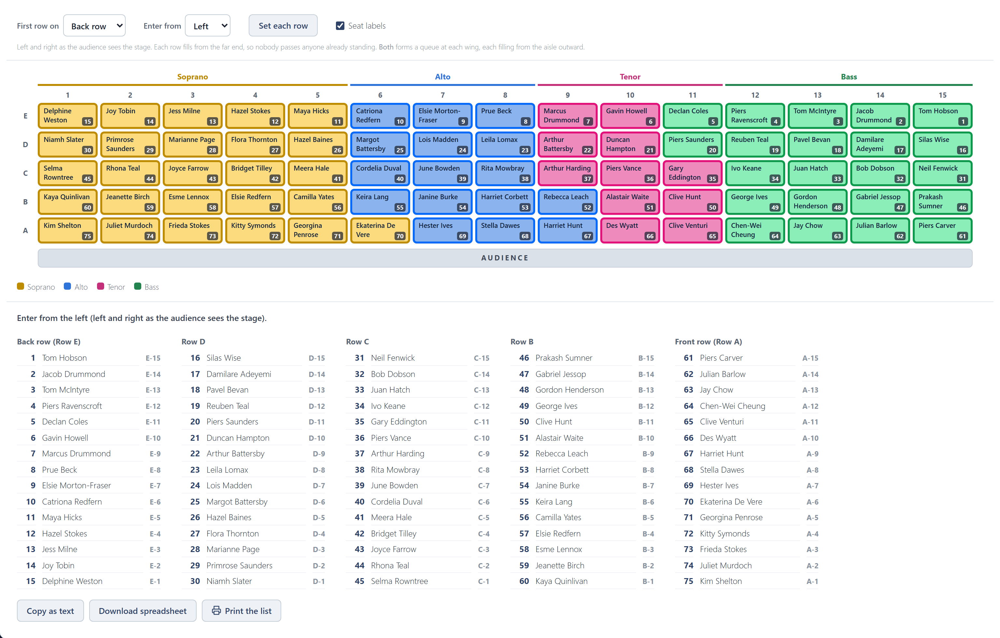
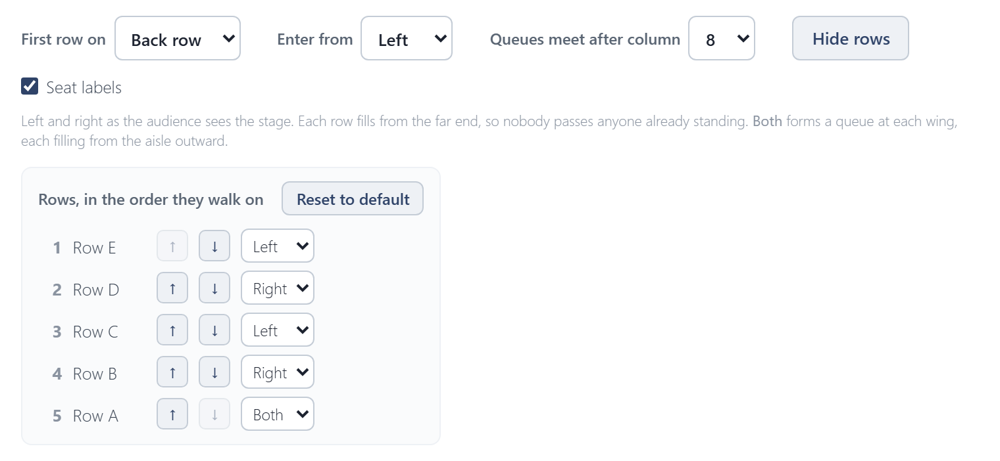

Walk-on order
The walk-on order is the order singers file onto the stage, so a queue can form backstage. It has its own tab: click Walk-on order beside Arrange, above the stage. The tab shows the walk-on settings, the stage with every chair's number in the queue in its bottom-right corner, and the list. The stage there is for checking, not arranging: to move someone, go back to Arrange, where the split labels show again.

- First row on: the back row or the front row first.
- Enter from: the left or right wing, as the audience sees the stage, or Both. Both makes two queues, one at each wing, that meet at the aisle; choose which column they meet after.
- Each row fills from the far end, so nobody squeezes past anyone already standing.
Setting each row
Set each row lists the rows in the order they walk on. The arrows move a row earlier or later, and the picker beside them gives it its own direction: Left, Right or Both. Reset to default puts every row back to First row on and Enter from.

Taking the list away
The list underneath is the queue:
- Copy as text puts it on the clipboard, for an email or a document.
- Download spreadsheet saves it as a CSV file, which opens in Excel.
- Print prints it on its own, A4 portrait, one column per row.